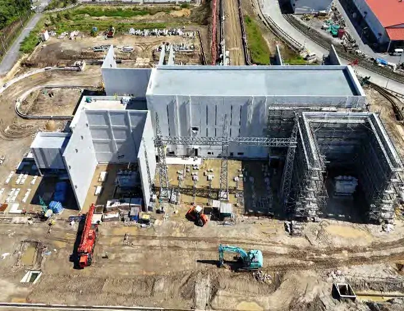

Perkhidmatan pembinaan & penyelenggaraan untuk minyak dan gas
Empat disiplin teras yang dilaksanakan dari bengkel Miri dan limbungan fabrikasi Bintulu kami, dengan pengurusan projek yang merangkumi perolehan, pembinaan dan pentauliahan.
Pembinaan dan Penyelenggaraan Loji Industri
BWS menyediakan perkhidmatan pembinaan dan penyelenggaraan loji industri, berteraskan lebih dua dekad pengalaman kerja di kemudahan minyak dan gas yang beroperasi. Skop kami merangkumi kemudahan minyak dan gas, loji penjanaan kuasa dan kilang berasaskan kayu, disokong dari pangkalan kami di Miri dan Bintulu. Setiap kerja dilaksanakan mengikut dasar HSE dan Sistem Pengurusan Kualiti ISO 9001:2015 kami.
Skop
- Kemudahan minyak dan gas
- Loji penjanaan kuasa
- Kilang berasaskan kayu

Kerja Mekanikal dan Paip
Pasukan mekanikal kami memasang dan menguji peralatan mekanikal, serta memfabrikasi, memasang dan menguji sistem paip. Fabrikasi dijalankan di bengkel Miri dan limbungan Bintulu kami, yang mempunyai bengkel fabrikasi berbumbung, kawasan fabrikasi terbuka, kemudahan letupan pasir dan cat, serta kemudahan NDT.
Skop
- Pemasangan dan pengujian peralatan mekanikal
- Fabrikasi, pemasangan dan pengujian paip
- Kerja letupan pasir dan cat

Pembinaan Awam, Bangunan dan Keluli Struktur
Daripada pembersihan tapak dan kerja tanah hingga asas, kami melaksanakan kerja awam yang menjadi tunjang kemudahan industri. Skop kami turut merangkumi bangunan perindustrian, gudang, keluli struktur dan jeti. BWS berdaftar dengan Lembaga Pembangunan Industri Pembinaan Malaysia (CIDB) bagi pelbagai kategori aktiviti pembinaan.
Skop
- Pembersihan tapak
- Kerja tanah
- Asas
- Bangunan perindustrian dan gudang
- Jeti

Kerja Elektrik dan Instrumentasi
Pasukan elektrik dan instrumentasi kami melaksanakan pemasangan dan pengujian kabel, serta pemasangan dan pengujian peralatan elektrik. Kami menentukur, memasang dan menguji instrumen, serta memberikan bantuan pentauliahan supaya sistem dapat beroperasi dengan selamat.
Skop
- Pemasangan dan pengujian kabel
- Pemasangan dan pengujian peralatan elektrik
- Penentukuran, pemasangan dan pengujian instrumen
- Bantuan pentauliahan

Loji & peralatan
Loji dan peralatan milik syarikat
BWS memiliki peralatan angkat, kimpalan, pemotongan dan pengujian sendiri, sekali gus mengurangkan kebergantungan kepada sewaan pihak ketiga. Antara peralatan utama:
- 13
Kren, 25 hingga 120 tan
Kren rupa bumi kasar, kren bergerak dan kren semua rupa bumi 120 tan, serta forklift sehingga 10 tan, lori treler dan sebuah prime mover.
- 50+
Set kimpalan
Mesin kimpalan Lincoln dan Miller, penjana kimpalan diesel, penyongsang dan ketuhar pembakar elektrod.
- 8–36″
Pemotongan & penyerongan paip
Mesin pemotong sejuk dan penyerong pneumatik Wachs, pemotong paip automatik Koike, pembengkok paip dan mesin pengulir.
- 5,000 psi
Pengujian & tork
Pam hidrostatik dan perakam tekanan, alat tork hidraulik, serta pengesan gas berbilang dan tunggal.
- 150 kVA
Kuasa & pencahayaan
Penjana diesel sehingga 150 kVA dan menara lampu bergerak untuk kerja malam.
- BS 1139
Kerja tanah & akses
Jentera pengorek, jengkaut, peralatan ukur dan stok besar perancah BS 1139.
Lihat daftar peralatan penuh (120 item)
| Jenis | Item | Kapasiti | Unit |
|---|---|---|---|
| Kren | Kobelco RK250-3 rough-terrain crane | 25 t | 1 |
| Kren | Kato KR25H mobile crane | 25 t | 1 |
| Kren | Tadano TR-250M-5 mobile crane | 25 t | 1 |
| Kren | Kato rough-terrain crane | 25 t | 1 |
| Kren | Kato mobile crane | 25 t | 1 |
| Kren | Kato SS500 mobile crane | 45 t | 1 |
| Kren | Kato mobile crane | 45 t | 1 |
| Kren | Tadano TR-550M-1 mobile crane | 45 t | 1 |
| Kren | Tadano GR-500EXL rough-terrain crane | 50 t | 2 |
| Kren | Tadano rough-terrain crane | 51 t | 2 |
| Kren | AR-1200M all-terrain crane | 120 t | 1 |
| Forklif | Nissan forklift | 2 t | 1 |
| Forklif | Nissan forklift | 2.5 t | 1 |
| Forklif | Sumitomo forklift | 3 t | 1 |
| Forklif | Toyota forklift | 5 t | 1 |
| Forklif | Forklift | 10 t | 1 |
| Forklif | Telescopic forklift truck | – | 1 |
| Treler dan prime mover | Scania lorry trailer | 10 t | 2 |
| Treler dan prime mover | Volvo FM12 lorry trailer | 20 t | 1 |
| Treler dan prime mover | Volvo prime mover | 10 t | 1 |
| Lori dan trak | JAC cargo lorry | 3 t | 2 |
| Lori dan trak | JAC dump truck | 3 t | 1 |
| Lori dan trak | Nissan cargo lorry | – | 3 |
| Lori dan trak | Daihatsu lorry | 1 t | 1 |
| Lori dan trak | Toyota lorry | 1 t | 1 |
| Lori dan trak | Toyota rigid lorry | 1 t | 1 |
| Lori dan trak | Mitsubishi FB511B rigid lorry | 1 t | 1 |
| Lori dan trak | Mitsubishi rigid lorry | 5 t | 1 |
| Lori dan trak | Daihatsu Delta lorry | 5 t | 1 |
| Lori dan trak | Toyota rigid lorry | 5 t | 1 |
| Lori dan trak | Isuzu NKR55 rigid lorry | – | 1 |
| Lori dan trak | Isuzu NPR71 rigid lorry | – | 1 |
| Kenderaan lain | Passenger van | – | 18 |
| Kenderaan lain | 4WD pick-up | – | 26 |
| Kenderaan lain | Suzuki outboard motor | – | 2 |
| Peralatan pengorekan | Komatsu PC200-8 hydraulic excavator | 0.8 m³ | 2 |
| Peralatan pengorekan | Kubota KH30SR excavator | – | 2 |
| Peralatan pengorekan | Komatsu PC30-7 excavator | – | 1 |
| Peralatan pengorekan | Kubota RX-505 excavator | 5 t | 1 |
| Peralatan pengorekan | John Deere 310D backhoe | 0.5 yd³ | 1 |
| Peralatan kimpalan | Lincoln 500AS welding machine | 500 A | 4 |
| Peralatan kimpalan | Lincoln SA-500 welding machine | 500 A | 2 |
| Peralatan kimpalan | Miller 400 DX welding machine | 400 A | 3 |
| Peralatan kimpalan | Miller 401 DX welding machine | 400 A | 1 |
| Peralatan kimpalan | Miller 500 DX welding machine | 500 A | 8 |
| Peralatan kimpalan | Miller Big Blue 600X diesel welding generator | 600 A | 4 |
| Peralatan kimpalan | Shindaiwa welder generator | 400 A | 4 |
| Peralatan kimpalan | AFTEK P88 8-operator welding rectifier | – | 2 |
| Peralatan kimpalan | Kemppi MIG welding rectifier | – | 2 |
| Peralatan kimpalan | Jasic DC arc welding set | – | 6 |
| Peralatan kimpalan | Hero Tec GM-5000 inverter | – | 24 |
| Peralatan kimpalan | Miller high-frequency arc starter | 90 W | 2 |
| Peralatan kimpalan | MAC HSN 200 electrode baking oven | 200 kg | 1 |
| Peralatan kimpalan | Electrode baking oven | 150 kg | 2 |
| Peralatan kimpalan | Electrode baking oven | 10 kg | 30 |
| Peralatan kimpalan | Welding cable | 400 A | 35 |
| Penjanaan kuasa dan pencahayaan | FG Wilson P160 diesel generator | 128 kW | 2 |
| Penjanaan kuasa dan pencahayaan | Perkins diesel generator | 40 kW | 1 |
| Penjanaan kuasa dan pencahayaan | Yanmar diesel generator | 15 kW | 1 |
| Penjanaan kuasa dan pencahayaan | Yanmar diesel generator | 5 kW | 6 |
| Penjanaan kuasa dan pencahayaan | Canopy generator set | 150 kVA | 1 |
| Penjanaan kuasa dan pencahayaan | DS 150 generator set | – | 1 |
| Penjanaan kuasa dan pencahayaan | AMF control panel | 150 kVA | 1 |
| Penjanaan kuasa dan pencahayaan | Mobile lighting tower with generator set | – | 8 |
| Pemotongan, pembengkokan, pengisaran dan penggerudian | Wachs pneumatic pipe cutter | 6"–36" | 2 |
| Pemotongan, pembengkokan, pengisaran dan penggerudian | Koike automatic pipe cutting machine | 4"–30" | 4 |
| Pemotongan, pembengkokan, pengisaran dan penggerudian | Automatic pipe and plate cutting machine | – | 1 |
| Pemotongan, pembengkokan, pengisaran dan penggerudian | Plasma cutter (EOX Plasma Cut 53) | – | 1 |
| Pemotongan, pembengkokan, pengisaran dan penggerudian | Plasma cutter (HPT CA90) | – | 1 |
| Pemotongan, pembengkokan, pengisaran dan penggerudian | Murex / Saffire gas cutting set | – | 5 |
| Pemotongan, pembengkokan, pengisaran dan penggerudian | Hitachi electric cut-off machine | 14" | 2 |
| Pemotongan, pembengkokan, pengisaran dan penggerudian | Kubota diesel bar cutter | 32–40 mm | 2 |
| Pemotongan, pembengkokan, pengisaran dan penggerudian | Kubota diesel bar bender | 32–40 mm | 2 |
| Pemotongan, pembengkokan, pengisaran dan penggerudian | Hydraulic pipe bending machine | ½"–3" | 1 |
| Pemotongan, pembengkokan, pengisaran dan penggerudian | Juma pipe bending machine | ½"–2" | 1 |
| Pemotongan, pembengkokan, pengisaran dan penggerudian | Rox pipe threading machine | ½"–3" | 2 |
| Pemotongan, pembengkokan, pengisaran dan penggerudian | Hitachi grinder | 7" | 1 |
| Pemotongan, pembengkokan, pengisaran dan penggerudian | Hitachi grinder | 4" | 20 |
| Pemotongan, pembengkokan, pengisaran dan penggerudian | Hitachi die grinder | – | 2 |
| Pemotongan, pembengkokan, pengisaran dan penggerudian | Hitachi magnetic drilling machine | – | 2 |
| Mesin pemotongan sejuk dan penyerongan pneumatik | Wachs SF 814 split-frame machine, low clearance | 8"–14" | 1 |
| Mesin pemotongan sejuk dan penyerongan pneumatik | Wachs SF 1218 cold-cutting machine | 12"–18" | 1 |
| Mesin pemotongan sejuk dan penyerongan pneumatik | Wachs SF 1420 cold-cutting machine | 14"–20" | 1 |
| Mesin pemotongan sejuk dan penyerongan pneumatik | Wachs SF 2228 cold-cutting machine | 22"–28" | 1 |
| Mesin pemotongan sejuk dan penyerongan pneumatik | Wachs SF 3036 cold-cutting machine | 30"–36" | 1 |
| Peralatan pembautan dan tork | DFT2 hydraulic torque power unit, with 1¼", 1-7/16", 1⅝" and 1-13/16" hexagon ratchet heads | – | 1 |
| Peralatan pembautan dan tork | DFT4 hydraulic torque power unit, with 2", 2-3/16", 2⅜", 2-9/16", 2¾" and 2-15/16" hexagon ratchet heads | – | 1 |
| Peralatan pembautan dan tork | Dura-Lite square-drive torque wrench | ¾", 1", 1½" | 3 |
| Peralatan pembautan dan tork | Air-driven torque pump, 4 ports | – | 2 |
| Peralatan pembautan dan tork | Twin-line hose, 20 ft | – | 2 |
| Peralatan pembautan dan tork | Hi-Force HT2700 torque multiplier | – | 1 |
| Peralatan pembautan dan tork | Toku pneumatic torque wrench | 1" | 2 |
| Peralatan pembautan dan tork | Ace pneumatic torque wrench | ¾" | 2 |
| Ujian hidrostatik | Foxboro 40PR pressure recorder | 5,000 psi | 2 |
| Ujian hidrostatik | Dakin SC10-600-8 hydrostatic pump | 1,000 psi | 2 |
| Pengesanan gas dan ruang terkurung | Industrial Scientific multi-gas detector | – | 6 |
| Pengesanan gas dan ruang terkurung | Industrial Scientific single-gas detector | – | 10 |
| Pengesanan gas dan ruang terkurung | Coppus venturi air mover | 6 hp | 2 |
| Pengesanan gas dan ruang terkurung | Coppus air-driven reaction fan | 16" | 1 |
| Ukur | Sokkisha TM20H theodolite | 20" | 2 |
| Ukur | Digital theodolite DT209 | – | 1 |
| Ukur | Sokkisha B2A dumpy level | – | 1 |
| Ukur | Sokkisha B2C dumpy level | – | 1 |
| Ukur | AL28 auto level with tripod and levelling staff | 5 m | 1 |
| Udara termampat | Ingersoll Rand C185 portable air compressor | – | 1 |
| Udara termampat | Doosan C185 portable air compressor | – | 1 |
| Udara termampat | Portable air compressor | – | 1 |
| Perancah (BS 1139) | Scaffold tube, 6.2 m | – | 300 |
| Perancah (BS 1139) | Fixed clamp | – | 1,000 |
| Perancah (BS 1139) | Putlog coupler | – | 500 |
| Perancah (BS 1139) | Swivel clamp | – | 200 |
| Perancah (BS 1139) | Sleeve coupler | – | 100 |
| Perancah (BS 1139) | Joint pin | – | 100 |
| Perancah (BS 1139) | Board clamp | – | 25 |
| Perancah (BS 1139) | Frame with bracing and joint pins | – | 18 |
| Perancah (BS 1139) | Scaffolding material, BS standard (m³) | – | 30,000 |
| Komunikasi | Motorola P8200 UHF walkie-talkie | – | 20 |
| Komunikasi | Motorola radio unit, non-keypad | – | 15 |
| Komunikasi | Motorola GP328 UHF walkie-talkie, intrinsically safe, 16 channels | – | 6 |
| Komunikasi | Motorola GP328 UHF walkie-talkie, intrinsically safe, 4 channels | – | 6 |
Daripada senarai peralatan BWS, Oktober 2026. Ketersediaan bagi sesuatu projek disahkan pada peringkat tender.
Bincangkan keperluan projek anda bersama BWS
Kami sedia memberikan perkhidmatan yang lebih baik kepada anda.